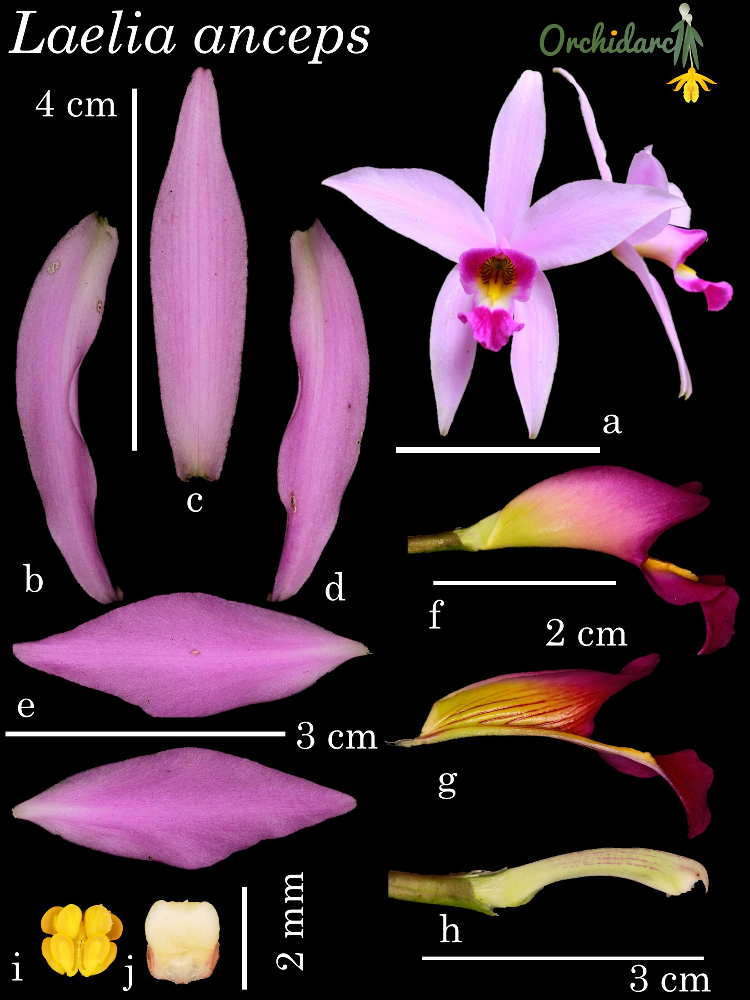

▶
Lily of Allsaints
The sacred orchids of Mexico — Laelia anceps on Day of the Dead altars, the cloud forests where it still grows wild, and the people who keep it alive.
Best Feature Environmental Documentary, FICAA Mexico City, 2025
Orchidarc is a UK-registered conservation NGO working in the cloud forests of Mexico. We protect wild orchid populations through field research, habitat restoration, IUCN Red List assessment — and documentary films that bring those forests to the world.
Our first formal taxonomic contribution: a hybrid genus from the Mexican cloud forest belt.

The parent genera are Nidema and Dinema. The result is Dinedema — the nest-crown — the first new orchid taxon described and published by Orchidarc.
Read profileDocumentary work from Orchidarc — released films and current development.
The sacred orchids of Mexico — Laelia anceps on Day of the Dead altars, the cloud forests where it still grows wild, and the people who keep it alive.
Best Feature Environmental Documentary, FICAA Mexico City, 2025
A montage-style portrait of the orchids that bloom when the Mexican forest is at its driest.
A feature-length documentary in development with Orchidarc, built around Mexican orchid habitats, pollination, fungal partnerships and conservation action.
Enquiries from broadcasters, distributors and co-production partners welcome — andresr@orchidarc.org.
Orchidarc combines field biology, conservation storytelling and long-term site work to document species before populations are lost to extraction, land-use change and forest fragmentation.
Support the workSelected entries from the orchids we monitor, propagate and assess for the IUCN Red List.

Mexico's iconic lily of the altars, flowering with the season of the Day of the Dead.
Read profile
Pendant cloud-forest inflorescences and one of Orchidarc's flagship monitoring species.
Read profile
A Central American icon thriving within the Orchidarc reserve canopy.
Read profile
The pendant-leaf giant, night-scented and increasingly rare in accessible forest.
Read profileExplore Orchidarc's working NOM-059 orchid list and the 34 orchid taxa documented as extinct or probably extinct from the Mexican flora.